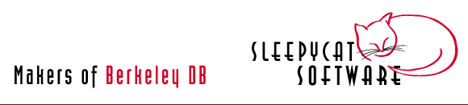

Copyright (c) 1990-2004 Sleepycat Software, Inc., 118 Tower Rd., Lincoln, MA 01773, U.S.A. All Rights Reserved.
This product and publication is protected by copyright and distributed under licenses restricting its use, copying and distribution. See the LICENSE file in the distribution for further information.
RESTRICTED RIGHTS: Use, duplication, or disclosure by the U.S. Government is subject to restrictions of FAR 52.227-14(g)(2)(6/87) and FAR 52.227-19(6/87), or DFAR 252.227-7015(b)(6/95) and DFAR 227.7202-3(a).
Sleepycat and the names of Sleepycat Software products referenced herein are trademarks, registered trademarks or service marks of Sleepycat Software, Inc.
DIGITAL and ULTRIX are trademarks, registered trademarks or service marks of Compaq Corporation.
Hewlett-Packard and HP-UX are trademarks, registered trademarks or service marks of Hewlett-Packard Company.
Microsoft, Windows, Windows NT, Windows 2000 and Windows XP are trademarks, registered trademarks or service marks of Microsoft Corporation.
QNX and Neutrino are trademarks, registered trademarks or service marks QNX Software Systems Ltd.
Sun Microsystems, SunOS and Solaris are trademarks, registered trademarks or service marks of Sun Microsystems, Inc.
TUXEDO is a trademark, registered trademark or service mark of BEA Systems, Inc.
Linux is a registered trademark of Linus Torvalds.
VxWorks and Tornado are trademarks, registered trademarks or service marks of Wind River Systems Inc.
All other brand, company and product names referenced in this publication may be trademarks, registered trademarks or service marks of their respective holders and are used here for informational purposes only.
WARNING: There is a non-zero chance that, through a process know as "tunneling," this product may spontaneously disappear from its present location and reappear at any random place in the universe. Sleepycat Software will not be responsible for damages or inconvenience that may result.
THIS PRODUCT IS PROVIDED BY SLEEPYCAT SOFTWARE "AS IS" AND ANY EXPRESS OR IMPLIED WARRANTIES, INCLUDING, BUT NOT LIMITED TO, THE IMPLIED WARRANTIES OF MERCHANTABILITY, FITNESS FOR A PARTICULAR PURPOSE, OR NON-INFRINGEMENT, ARE DISCLAIMED. IN NO EVENT SHALL SLEEPYCAT SOFTWARE BE LIABLE FOR ANY DIRECT, INDIRECT, INCIDENTAL, SPECIAL, EXEMPLARY, OR CONSEQUENTIAL DAMAGES (INCLUDING, BUT NOT LIMITED TO, PROCUREMENT OF SUBSTITUTE GOODS OR SERVICES; LOSS OF USE, DATA, OR PROFITS; OR BUSINESS INTERRUPTION) HOWEVER CAUSED AND ON ANY THEORY OF LIABILITY, WHETHER IN CONTRACT, STRICT LIABILITY, OR TORT (INCLUDING NEGLIGENCE OR OTHERWISE) ARISING IN ANY WAY OUT OF THE USE OF THIS SOFTWARE, EVEN IF ADVISED OF THE POSSIBILITY OF SUCH DAMAGE.
Copyright (c) 1996-2004 Sleepycat Software, Inc. - All rights reserved.